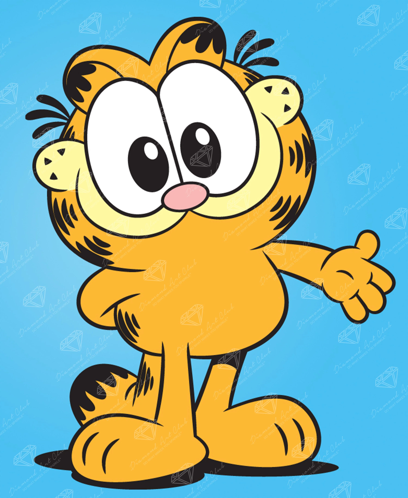

Origenes y creación

Un poco de su historia
Garfield, el icónico gato naranja amante de la lasaña, fue creado por el dibujante Jim Davis y debutó el 19 de junio de 1978 en 41 periódicos estadounidenses. La tira cómica se centra en la vida perezosa y cínica de Garfield, su dueño Jon Arbuckle y el perro Odie, destacando por su humor sarcástico sobre los lunes y la glotonería.
Jim Davis, tras trabajar en otra tira cómica (Tumbleweeds), notó que había muchos cómics de perros pero ninguno de gatos. Se inspiró en su propia infancia en una granja rodeado de gatos y nombró al personaje en honor a su abuelo, James A. Garfield Davis.
Aunque inicialmente rechazada por varias agencias que pedían enfocarse más en el gato, United Feature Syndicate aceptó la tira. Debutó en 1978 con un diseño más gordo y cercano a un gato real, evolucionando con los años a una forma más estilizada y antropomórfica.
Según los cómics, Garfield nació en la cocina del restaurante italiano "Mamma Leoni", donde desarrolló su insaciable amor por la lasaña. Debido a su voracidad, el dueño del restaurante lo vendió a una tienda de mascotas, donde Jon Arbuckle lo adoptó.
Personalidad
Rasgos interesantes de Garfield
- Pereza Extrema: Su actividad favorita es dormir y evitar cualquier esfuerzo físico
- Gula y Amor por la Comida: La lasaña es su alimento preferido, y su apetito es insaciable.
- Cinismo y Sarcasmo: Es un observador crítico que se burla de la vida cotidiana, especialmente de la torpeza de Jon.
- Inteligencia y Manipulación: Es muy astuto, sabe cómo conseguir lo que quiere (comida y comodidad) manipulando a los humanos.
- Antipatía por los Lunes: Odia el inicio de la semana por representar el fin del descanso, aunque él no trabaje.
- Egoísmo con Cariño Oculto: Aunque se comporta de forma egoísta y patea a Odie, en el fondo se preocupa por sus compañeros.
- Intolerancia a la Ternura: Detesta a Nermal, el "gatito más lindo del mundo", por considerarlo una amenaza a su posición
Rasgos predominantes
- Pereza extrema
- Cinismo y Sarcasmo
- Antipatía por los lunes
Datos de Garfield
| Nombre completo | Garfield Davis |
|---|---|
| Comida favorita | Lasaña |
| Personalidad | Perezoso y sarcastico |
| Amigos | Odie y Jon |
| Fecha de nacimiento | 19 de junio de 1978 |
¿Eres digno de ser amigo de Garfield?
Completa este formulario y descubre si eres compatible con Garfield.
Galería